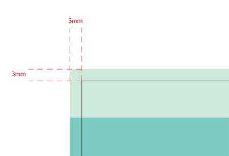

The Good Kind Of Bleed
A design destined for print requires setting up to certain specifications to ensure that the work is printed correctly by industrial lithographic or digital print firms. This often starts with the initial document upon which the design is to be created by adding the correct bleed area and crop marks.
1 baffling bleed
Let’s start with the term bleed, this is the area of artwork that is extended beyond the actual dimensions of the document. It is used to avoid strips of white paper showing on the edges of your print should the batch be misaligned when cut to size.
Any objects in your artwork that touch the edges of the document require bleed, for instance a background colour or image should spread to cover the entire bleed area as should any objects that creep in from the side of the page.
For example, if you have designed a standard 3.5" x 2" business card with a red background covering the whole area, you will need to enlarge that red background to 3.75" x 2.25". This will make the red background extend 1/8" on every side of the page.
2 BUT WHY?
Small mechanical variations can end up leaving a hairline white edge where there should be no white edge at all, if the image is not extended beyond the final trim size. Extending images 1/8" beyond the final trim size guarantees that images truly will go all the way to the edge of the printed paper.

3 DON'T FORGET MARGIN
In addition to bleed, you should also add a margin to the edges of the document to avoid having your objects look as if they are about to fall of the page or even worse actually get cropped off when the document is trimmed! The amount of margin is personal preference, but 3mm, 5mm or 10mm is usually used depending on the size of the overall design.
4 HOW TO
Adobe Photoshop
• Open Photoshop and click File > New...
• Enter the FULL BLEED dimensions. That is, 1/4" extra both vertically and horizontally.
• Set the Resolution at 300 pixels/inch
• Set the Color Mode to CMYK
Adobe Illustrator
• Open Illustrator and click File > New...
• Enter the TRIM dimensions in the Width and Height boxes (for example, the trim dimension on a standard business card would be 3.5" x 2")
• Enter 0.125 for the top, bottom, left and right bleed
• Set the the Color Mode to CMYK
• Set the Raster Effects at High (300ppi)
Adobe InDesign
• Open InDesign and click File > New > Document...
• Enter the TRIM dimensions under Page Size (for example, a standard business card would have trim dimensions of 3.5" x 2")
• If you do not see "Bleed and Slug" at the bottom of the window, click the "More Options" button.
• Enter 0.125 for the top, bottom, left and right bleed